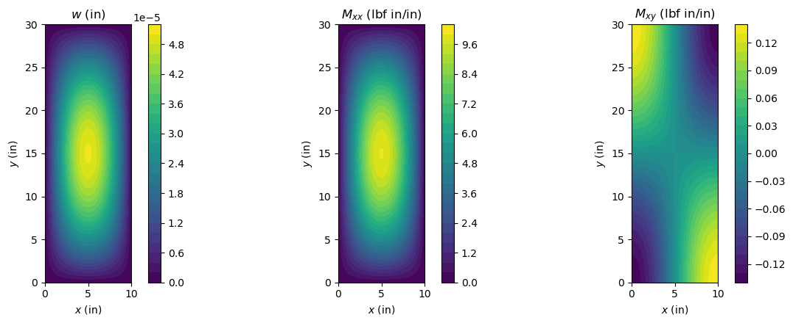

Linear static analysis#
This example computes the displacement, strain and stress fields of a laminated plate under a transverse pressure, for the five models of panels that the example compares, and checks them against the Navier solutions of Reddy (1984) and the three-dimensional elasticity solution of Pagano (1970).
A Shell object describes a plate or a cylindrical shell through its attributes: the geometry, the laminate, the number of terms m and n of the approximation functions and the model, by default 'plate_clpt_donnell' for plates and 'cylshell_clpt_sanders' for cylindrical shells; see panels.models for the other models. The displacements are Ritz series, each term a product of a function of \(x\) and a function of \(y\). These functions are the Legendre-based
hierarchical functions of Bardell (1991), in the form of Castro and Donadon (2017), see Bardell’s functions. Minimizing the total potential energy with respect to the Ritz constants \(\boldsymbol{c}\) gives the linear system
where \(\boldsymbol{K}_C\) is the constitutive stiffness matrix, Shell.calc_kC, and \(\boldsymbol{F}_{ext}\) the external force vector, Shell.calc_fext. The system is solved with structsolve.solve, and the fields are recovered from \(\boldsymbol{c}\) with Shell.uvw, Shell.strain and Shell.stress.
[1]:
%matplotlib inline
import numpy as np
import matplotlib.pyplot as plt
from IPython.display import Markdown, display
from structsolve import solve
from panels.shell import Shell
def results_table(rows):
"""Markdown table of (quantity, panels, reference, source) rows"""
out = ['| quantity | panels | reference | relative difference | reference source |',
'|---|---|---|---|---|']
for name, val, ref, src in rows:
out.append('| %s | %.6g | %.6g | %+.2e | %s |'
% (name, val, ref, (val - ref)/abs(ref), src))
display(Markdown('\n'.join(out)))
Plate, laminate, boundary conditions and load#
The case is Problem 2 of Reddy (1984): a rectangular plate with \(b = 3a\), of three layers \([0/90/0]\) of equal thickness \(h/3\), the fibres of the outer layers along \(x\), under the sinusoidal pressure
with the lamina properties of Reddy’s Eq. (27), \(E_1 = 25 \times 10^6\) psi, \(E_2 = 10^6\) psi, \(G_{12} = G_{13} = 0.5 \times 10^6\) psi, \(G_{23} = 0.2 \times 10^6\) psi, \(\nu_{12} = 0.25\). They are given in psi and the lengths in inches; the normalized results below do not depend on the units nor on \(a\). The material is given by laminaprop \(= (E_{11}, E_{22}, \nu_{12}, G_{12}, G_{13}, G_{23})\). The load is a callable passed to
Shell.add_pressure_load.
The plate is simply supported. Reddy’s Navier solution, his Eq. (20), takes \(w \propto \sin\alpha x \sin\beta y\), \(\psi_x \propto \cos\alpha x \sin\beta y\) and \(\psi_y \propto \sin\alpha x \cos\beta y\): \(w\) and the rotation tangential to the edge vanish at the edges, the normal rotation is free. For this symmetric laminate the in-plane displacements are uncoupled from the bending; here the tangential displacement is constrained and the normal one is free (the hard simple
support). The boundary conditions are the flags x1u, x1ur, x2u, …, y2wr: 0 constrains and 1 releases the translation (e.g. x1u) or the rotation (e.g. x1ur) of each displacement component at the edges \(x = 0\) (x1), \(x = a\) (x2), \(y = 0\) (y1) and \(y = b\) (y2). The models based on shear deformation theories have the rotations as independent fields, with the analogous flags x1phix, x1phixr, …, y2phiyr.
Reddy’s first-order shear deformation theory (FSDT) results use the shear correction factors \(k_1^2 = k_2^2 = 5/6\) (footnote b of his Table 2); the same value is given to Shell.fsdt_shear_correction, a float that multiplies the transverse shear stiffness.
[2]:
E1, E2, NU12, G12, G13, G23 = 25e6, 1e6, 0.25, 0.5e6, 0.5e6, 0.2e6 # psi
Q0 = 1. # psi
A = 10. # in
def build_plate(model, S, m=12, n=12):
"""Plate (or nearly flat cylindrical shell) of length a = A and a/h = S"""
h = A/S
s = Shell(model=model, a=A, b=3*A, m=m, n=n, stack=[0, 90, 0], plyt=h/3,
laminaprop=(E1, E2, NU12, G12, G13, G23),
r=1.e8*A if model.startswith('cylshell') else None)
s.fsdt_shear_correction = 5/6
for edge in ('x1', 'x2', 'y1', 'y2'):
x_edge = edge.startswith('x')
for field in ('u', 'v', 'w', 'phix', 'phiy'):
setattr(s, edge + field, 1.)
setattr(s, edge + field + 'r', 1.)
setattr(s, edge + ('v' if x_edge else 'u'), 0.)
setattr(s, edge + 'w', 0.)
setattr(s, edge + ('phiy' if x_edge else 'phix'), 0.)
s.add_pressure_load(lambda x, y: Q0*np.sin(np.pi*x/s.a)*np.sin(np.pi*y/s.b))
return s
s = build_plate('plate_clpt_donnell', S=10)
print('number of Ritz constants:', s.get_size())
number of Ritz constants: 432
Solving the linear system and recovering the stresses#
Shell.strain gives the generalized strains of the model: the membrane strains \(\varepsilon^{(0)} = (\varepsilon_{xx}, \varepsilon_{yy}, \gamma_{xy})\) and the curvatures \(\kappa^{(1)} = (\kappa_{xx}, \kappa_{yy}, \kappa_{xy})\), plus, for the third-order theory (TSDT), the cubic terms \(\kappa^{(3)}\) (kxx3, kyy3, kxy3). The in-plane strains at a thickness coordinate \(z\) are
and the stresses of a ply follow from its plane-stress reduced stiffnesses, here of the \(0^\circ\) ply at the top face, \(\sigma_{xx} = Q_{11}\varepsilon_{xx} + Q_{12}\varepsilon_{yy}\) and \(\tau_{xy} = Q_{66}\gamma_{xy}\), with \(Q_{11} = E_1/(1 - \nu_{12}\nu_{21})\), \(Q_{12} = \nu_{12}E_2/(1 - \nu_{12}\nu_{21})\), \(Q_{66} = G_{12}\) and \(\nu_{21} = \nu_{12}E_2/E_1\).
The quantities are normalized as in Reddy (1984), Table 1:
The footnote of Table 1 prints the factor of \(\bar w\) as 10; the ordinate of Reddy’s Fig. 3, “\(\times 10^2\)”, and the values of the tables, reproduced below, correspond to 100, the factor of Pagano (1970), Eq. (39).
[3]:
NU21 = NU12*E2/E1
Q11 = E1/(1 - NU12*NU21)
Q12 = NU12*E2/(1 - NU12*NU21)
Q66 = G12
def normalized(s, c, S):
"""(w_bar, sigma_1_bar, sigma_6_bar) of Reddy (1984), Table 1"""
a, b, h = s.a, s.b, s.a/S
w = s.uvw(c, xs=np.array([a/2]), ys=np.array([b/2]))[1]['w'][0]
f = s.strain(c, xs=np.array([a/2, 0.]), ys=np.array([b/2, 0.]))[1]
z = h/2
eps = {}
for e, k in (('exx', 'kxx'), ('eyy', 'kyy'), ('gxy', 'kxy')):
eps[e] = f[e] + z*f[k] + (z**3*f[k + '3'] if k + '3' in f else 0.)
sxx = Q11*eps['exx'][0] + Q12*eps['eyy'][0]
txy = Q66*eps['gxy'][1]
return (100*w*E2*h**3/(Q0*a**4), sxx*h**2/(Q0*a**2), txy*h**2/(Q0*a**2))
c = solve(s.calc_kC(), s.calc_fext(), silent=True)
print('CLPT, a/h = 10: w_bar = %.4f, sigma_1_bar = %.4f, sigma_6_bar = %.5f'
% normalized(s, c, 10))
CLPT, a/h = 10: w_bar = 0.5034, sigma_1_bar = 0.6233, sigma_6_bar = -0.00828
Fields#
The deflection \(w\) follows the load, a half sine wave in each direction. The bending moment \(M_{xx}\) is largest at the center, and the twisting moment \(M_{xy}\) at the corners, where the stress \(\tau_{xy}\) of \(\bar\sigma_6\) is evaluated:
[4]:
mesh, fields = s.uvw(c)
X, Y, w = mesh['Xs'], mesh['Ys'], fields['w'].copy()
_, fields = s.stress(c)
Mxx, Mxy = fields['Mxx'].copy(), fields['Mxy'].copy()
fig, axes = plt.subplots(1, 3, figsize=(13, 4.5))
for ax, field, title in zip(axes, (w, Mxx, Mxy),
('$w$ (in)', '$M_{xx}$ (lbf in/in)',
'$M_{xy}$ (lbf in/in)')):
cf = ax.contourf(X, Y, field, levels=30, cmap='viridis')
fig.colorbar(cf, ax=ax)
ax.set_title(title)
ax.set_xlabel('$x$ (in)')
ax.set_ylabel('$y$ (in)')
ax.set_aspect('equal')
fig.tight_layout()
plt.show()

The five models#
The same plate is solved with the classical laminated plate theory (CLPT) for a plate and for cylindrical shells with Donnell’s and Sanders’ kinematics, the shell models with a large radius \(r = 10^8 a\), with the FSDT and with the TSDT for plates, for \(a/h = 10\) and \(a/h = 100\). Each model is compared with the column of the same theory in Reddy (1984), Table 2: the classical plate theory (CPT), given in the block \(a/h = 100\), for the CLPT models (its normalized values do not depend on \(a/h\)), “FSDT” for the FSDT and “Present”, Reddy’s third-order theory, for the TSDT. The sign of \(\tau_{xy}\) at the corner depends on the orientation of \(z\) relative to the load; the magnitude of \(\bar\sigma_6\) is compared.
[5]:
# Reddy (1984), Table 2, (w_bar, sigma_1_bar, sigma_6_bar)
REDDY_T2 = {
10: {'Pagano': (0.919, 0.725, 0.0123), 'Present': (0.8622, 0.6924, 0.0115),
'FSDT': (0.803, 0.6214, 0.0105)},
100: {'Pagano': (0.508, 0.624, 0.0083), 'Present': (0.507, 0.624, 0.0083),
'FSDT': (0.5064, 0.6233, 0.0083)},
}
REDDY_CPT = (0.503, 0.623, 0.0083)
COLUMN = {'clpt': 'CPT', 'fsdt': 'FSDT', 'tsdt': 'Present'}
NAMES = (r'$\bar w$', r'$\bar\sigma_1$', r'$|\bar\sigma_6|$')
MODELS = ['plate_clpt_donnell', 'cylshell_clpt_donnell', 'cylshell_clpt_sanders',
'plate_fsdt_donnell', 'plate_tsdt_donnell']
results = {}
rows = []
for S in (10, 100):
for model in MODELS:
s = build_plate(model, S)
c = solve(s.calc_kC(), s.calc_fext(), silent=True)
values = normalized(s, c, S)
values = (values[0], values[1], abs(values[2]))
results[model, S] = values
print('a/h = %3d, %-22s w_bar %.4f, sigma_1_bar %.4f, |sigma_6_bar| %.5f'
% ((S, model) + values))
column = COLUMN[model.split('_')[1]]
ref = REDDY_CPT if column == 'CPT' else REDDY_T2[S][column]
for name, val, r in zip(NAMES, values, ref):
rows.append(('$a/h = %d$, `%s`: %s' % (S, model, name), val, r,
'Reddy (1984), Table 2, %s' % column))
results_table(rows)
a/h = 10, plate_clpt_donnell w_bar 0.5034, sigma_1_bar 0.6233, |sigma_6_bar| 0.00828
a/h = 10, cylshell_clpt_donnell w_bar 0.5034, sigma_1_bar 0.6233, |sigma_6_bar| 0.00828
a/h = 10, cylshell_clpt_sanders w_bar 0.5034, sigma_1_bar 0.6233, |sigma_6_bar| 0.00828
a/h = 10, plate_fsdt_donnell w_bar 0.8030, sigma_1_bar 0.6214, |sigma_6_bar| 0.01048
a/h = 10, plate_tsdt_donnell w_bar 0.8622, sigma_1_bar 0.6924, |sigma_6_bar| 0.01151
a/h = 100, plate_clpt_donnell w_bar 0.5034, sigma_1_bar 0.6233, |sigma_6_bar| 0.00828
a/h = 100, cylshell_clpt_donnell w_bar 0.5034, sigma_1_bar 0.6233, |sigma_6_bar| 0.00828
a/h = 100, cylshell_clpt_sanders w_bar 0.5034, sigma_1_bar 0.6233, |sigma_6_bar| 0.00828
a/h = 100, plate_fsdt_donnell w_bar 0.5064, sigma_1_bar 0.6233, |sigma_6_bar| 0.00830
a/h = 100, plate_tsdt_donnell w_bar 0.5070, sigma_1_bar 0.6240, |sigma_6_bar| 0.00831
quantity |
panels |
reference |
relative difference |
reference source |
|---|---|---|---|---|
\(a/h = 10\), |
0.503382 |
0.503 |
+7.59e-04 |
Reddy (1984), Table 2, CPT |
\(a/h = 10\), |
0.623271 |
0.623 |
+4.34e-04 |
Reddy (1984), Table 2, CPT |
\(a/h = 10\), |
0.0082803 |
0.0083 |
-2.37e-03 |
Reddy (1984), Table 2, CPT |
\(a/h = 10\), |
0.503382 |
0.503 |
+7.59e-04 |
Reddy (1984), Table 2, CPT |
\(a/h = 10\), |
0.623271 |
0.623 |
+4.34e-04 |
Reddy (1984), Table 2, CPT |
\(a/h = 10\), |
0.0082803 |
0.0083 |
-2.37e-03 |
Reddy (1984), Table 2, CPT |
\(a/h = 10\), |
0.503382 |
0.503 |
+7.59e-04 |
Reddy (1984), Table 2, CPT |
\(a/h = 10\), |
0.623271 |
0.623 |
+4.34e-04 |
Reddy (1984), Table 2, CPT |
\(a/h = 10\), |
0.0082803 |
0.0083 |
-2.37e-03 |
Reddy (1984), Table 2, CPT |
\(a/h = 10\), |
0.803011 |
0.803 |
+1.36e-05 |
Reddy (1984), Table 2, FSDT |
\(a/h = 10\), |
0.621417 |
0.6214 |
+2.78e-05 |
Reddy (1984), Table 2, FSDT |
\(a/h = 10\), |
0.0104795 |
0.0105 |
-1.95e-03 |
Reddy (1984), Table 2, FSDT |
\(a/h = 10\), |
0.86219 |
0.8622 |
-1.20e-05 |
Reddy (1984), Table 2, Present |
\(a/h = 10\), |
0.692351 |
0.6924 |
-7.00e-05 |
Reddy (1984), Table 2, Present |
\(a/h = 10\), |
0.01151 |
0.0115 |
+8.74e-04 |
Reddy (1984), Table 2, Present |
\(a/h = 100\), |
0.503382 |
0.503 |
+7.59e-04 |
Reddy (1984), Table 2, CPT |
\(a/h = 100\), |
0.623271 |
0.623 |
+4.34e-04 |
Reddy (1984), Table 2, CPT |
\(a/h = 100\), |
0.0082803 |
0.0083 |
-2.37e-03 |
Reddy (1984), Table 2, CPT |
\(a/h = 100\), |
0.503382 |
0.503 |
+7.59e-04 |
Reddy (1984), Table 2, CPT |
\(a/h = 100\), |
0.623271 |
0.623 |
+4.34e-04 |
Reddy (1984), Table 2, CPT |
\(a/h = 100\), |
0.00828029 |
0.0083 |
-2.37e-03 |
Reddy (1984), Table 2, CPT |
\(a/h = 100\), |
0.503382 |
0.503 |
+7.59e-04 |
Reddy (1984), Table 2, CPT |
\(a/h = 100\), |
0.623271 |
0.623 |
+4.34e-04 |
Reddy (1984), Table 2, CPT |
\(a/h = 100\), |
0.00828029 |
0.0083 |
-2.37e-03 |
Reddy (1984), Table 2, CPT |
\(a/h = 100\), |
0.506383 |
0.5064 |
-3.41e-05 |
Reddy (1984), Table 2, FSDT |
\(a/h = 100\), |
0.623252 |
0.6233 |
-7.77e-05 |
Reddy (1984), Table 2, FSDT |
\(a/h = 100\), |
0.00830283 |
0.0083 |
+3.41e-04 |
Reddy (1984), Table 2, FSDT |
\(a/h = 100\), |
0.507004 |
0.507 |
+8.17e-06 |
Reddy (1984), Table 2, Present |
\(a/h = 100\), |
0.623968 |
0.624 |
-5.20e-05 |
Reddy (1984), Table 2, Present |
\(a/h = 100\), |
0.00831334 |
0.0083 |
+1.61e-03 |
Reddy (1984), Table 2, Present |
The three CLPT models give the same values: with \(r = 10^8 a\) the curvature terms of the shell kinematics vanish. Each model reproduces the Navier solution of its own theory within the last printed digit, which shows that the Ritz series of \(12 \times 12\) terms has converged and that the boundary conditions are those of the Navier solution.
Shear deformation and the elasticity solution#
The theories differ in how they represent the transverse shear deformation. The CLPT neglects it, and its normalized values are those of a very thin plate. The FSDT assumes a constant shear strain through the thickness, corrected by \(k^2 = 5/6\), and the TSDT a parabolic one, which vanishes at the faces. Compared with the three-dimensional elasticity solution of Pagano (1970), also listed in Reddy’s Table 2, the error of each theory at \(a/h = 10\) is:
[6]:
rows = []
for model in ('plate_clpt_donnell', 'plate_fsdt_donnell', 'plate_tsdt_donnell'):
for S in (10, 100):
for name, val, r in zip(NAMES, results[model, S], REDDY_T2[S]['Pagano']):
rows.append(('$a/h = %d$, `%s`: %s' % (S, model, name), val, r,
'Pagano (1970), in Reddy (1984), Table 2'))
results_table(rows)
quantity |
panels |
reference |
relative difference |
reference source |
|---|---|---|---|---|
\(a/h = 10\), |
0.503382 |
0.919 |
-4.52e-01 |
Pagano (1970), in Reddy (1984), Table 2 |
\(a/h = 10\), |
0.623271 |
0.725 |
-1.40e-01 |
Pagano (1970), in Reddy (1984), Table 2 |
\(a/h = 10\), |
0.0082803 |
0.0123 |
-3.27e-01 |
Pagano (1970), in Reddy (1984), Table 2 |
\(a/h = 100\), |
0.503382 |
0.508 |
-9.09e-03 |
Pagano (1970), in Reddy (1984), Table 2 |
\(a/h = 100\), |
0.623271 |
0.624 |
-1.17e-03 |
Pagano (1970), in Reddy (1984), Table 2 |
\(a/h = 100\), |
0.0082803 |
0.0083 |
-2.37e-03 |
Pagano (1970), in Reddy (1984), Table 2 |
\(a/h = 10\), |
0.803011 |
0.919 |
-1.26e-01 |
Pagano (1970), in Reddy (1984), Table 2 |
\(a/h = 10\), |
0.621417 |
0.725 |
-1.43e-01 |
Pagano (1970), in Reddy (1984), Table 2 |
\(a/h = 10\), |
0.0104795 |
0.0123 |
-1.48e-01 |
Pagano (1970), in Reddy (1984), Table 2 |
\(a/h = 100\), |
0.506383 |
0.508 |
-3.18e-03 |
Pagano (1970), in Reddy (1984), Table 2 |
\(a/h = 100\), |
0.623252 |
0.624 |
-1.20e-03 |
Pagano (1970), in Reddy (1984), Table 2 |
\(a/h = 100\), |
0.00830283 |
0.0083 |
+3.41e-04 |
Pagano (1970), in Reddy (1984), Table 2 |
\(a/h = 10\), |
0.86219 |
0.919 |
-6.18e-02 |
Pagano (1970), in Reddy (1984), Table 2 |
\(a/h = 10\), |
0.692351 |
0.725 |
-4.50e-02 |
Pagano (1970), in Reddy (1984), Table 2 |
\(a/h = 10\), |
0.01151 |
0.0123 |
-6.42e-02 |
Pagano (1970), in Reddy (1984), Table 2 |
\(a/h = 100\), |
0.507004 |
0.508 |
-1.96e-03 |
Pagano (1970), in Reddy (1984), Table 2 |
\(a/h = 100\), |
0.623968 |
0.624 |
-5.20e-05 |
Pagano (1970), in Reddy (1984), Table 2 |
\(a/h = 100\), |
0.00831334 |
0.0083 |
+1.61e-03 |
Pagano (1970), in Reddy (1984), Table 2 |
At \(a/h = 100\) the three theories agree with the elasticity solution within about 1%. At \(a/h = 10\) the CLPT underestimates the deflection by about 45%, the FSDT by about 13% and the TSDT by about 6%. The TSDT also gives the closest stresses; the \(\bar\sigma_1\) of the FSDT is no closer than that of the CLPT, since in both theories the in-plane strains are linear in \(z\). These differences are those of the theories, not of the Ritz discretization, since each model agrees with the Navier solution of its own theory.
References#
Bardell, “Free vibration analysis of a flat plate using the hierarchical finite element method”. Journal of Sound and Vibration, 151(2):263-289, 1991. https://doi.org/10.1016/0022-460X(91)90855-E.
Castro and M. V. Donadon, “Assembly of semi-analytical models to address linear buckling and vibration of stiffened composite panels with debonding defect”. Composite Structures, 160:232-247, 2017. https://doi.org/10.1016/j.compstruct.2016.10.026.
Pagano, “Exact solutions for rectangular bidirectional composites and sandwich plates”. Journal of Composite Materials, 4(1):20-34, 1970. https://doi.org/10.1177/002199837000400102.
Reddy, “A simple higher-order theory for laminated composite plates”. Journal of Applied Mechanics, 51(4):745-752, 1984. https://doi.org/10.1115/1.3167719.